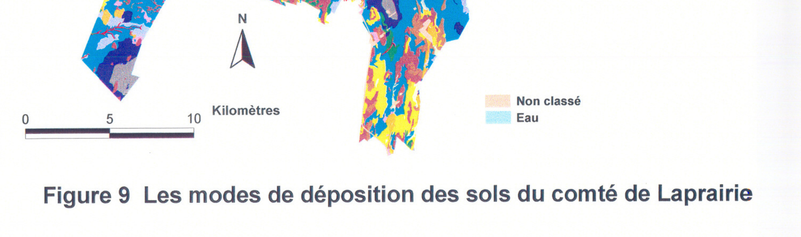
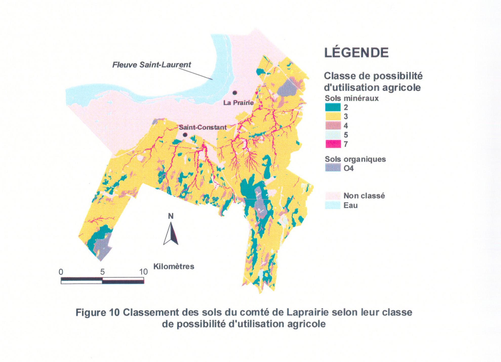
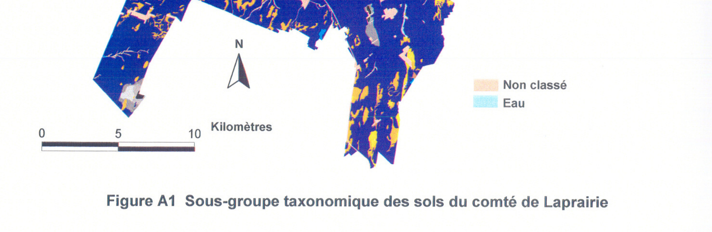
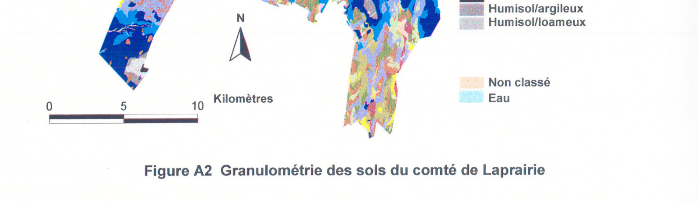
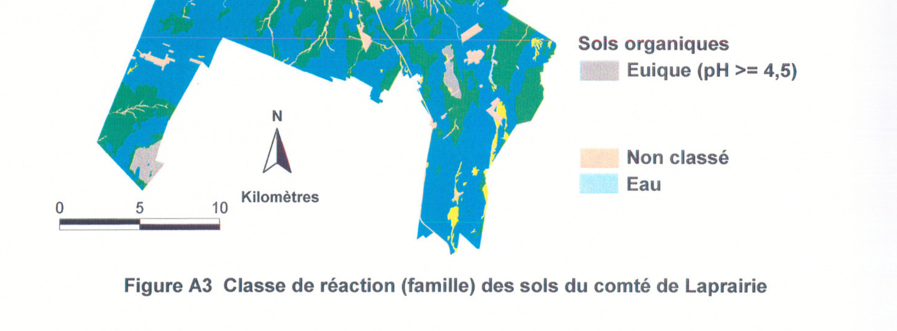
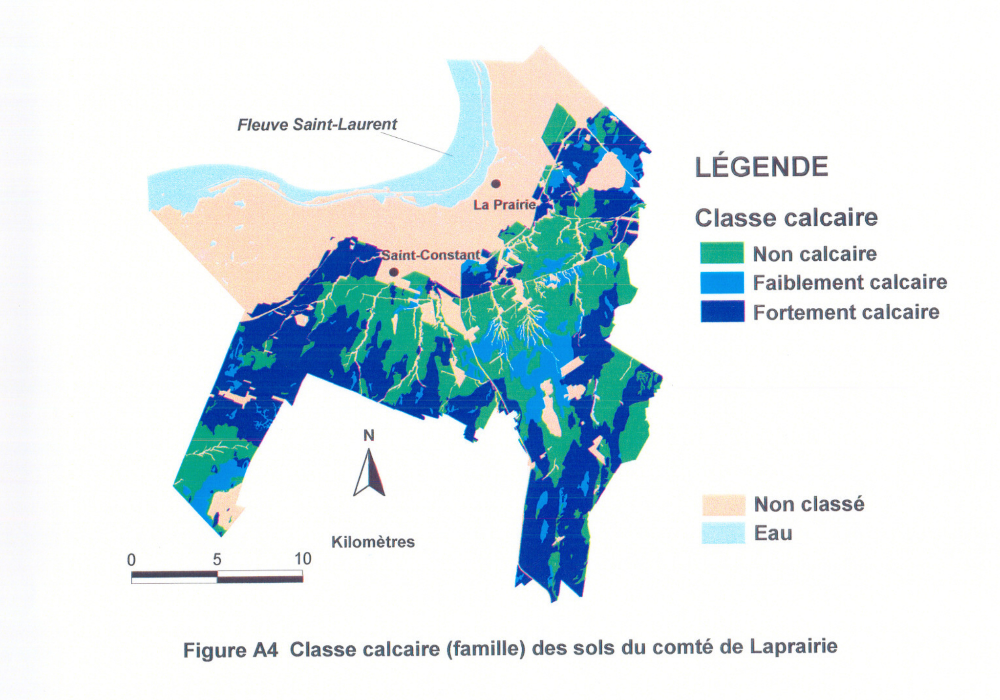

Identification & Caractéristiques Générales
Les sols de la série de Laprairie se développent sur des placages de matériaux loameux-fins d'une épaisseur variant de 40 à 80 cm, reposant sur des matériaux sous-jacents loameux-grossiers, squelettiques ou caillouteux. Ce système morphologique occupe les replats et les faibles pentes de 1 à 3 % de la plaine étale de la vallée du Saint-Laurent. Le matériel parental supérieur, de nature neutre, contient de 1 à 20 % de fragments grossiers constitués principalement de schistes, de micro-grès et de calcaires. Le substratum inférieur, quant à lui, présente une proportion de fragments grossiers pouvant atteindre 35 à 60 % et se caractérise par des réactions variant de faiblement à modérément alcalines, avec une présence marquée de carbonates à des profondeurs s'échelonnant généralement entre 30 et 100 cm. La profondeur au roc, constitué de schiste argileux des groupes de Lorraine ou d'Utica, excède le plus souvent 120 cm.
Sur le plan morphologique, ces sols profonds présentent un profil caractérisé par un mauvais drainage naturel et une nappe d'eau temporaire ou permanente induisant des traits gleyfiés (gley observable entre 0 et 30 cm de profondeur). L'horizon de surface (Ap ou Apg), d'une texture de loam, de loam argileux ou de loam limono-argileux, montre une réaction variant de moyennement acide à neutre. Le sous-sol (horizons Bg, Bmgj ou Bgk) se compose de loams ou de loams argileux parfois graveleux. Le substratum (IICkg) est généralement un loam sableux ou un loam à texture graveleuse ou caillouteuse. La pierrosité de surface est variable, et la perméabilité globale est limitée par la texture fine des horizons supérieurs et la saturation hydrique récurrente du profil.
En matière d'aptitudes agronomiques, les sols de la série de Laprairie sont principalement exploités pour les grandes cultures ou maintenus en friche, bien qu'une faible proportion demeure boisée. La principale limitation à la mise en valeur agricole réside dans l'hydromorphie prononcée et le mauvais drainage naturel, nécessitant l'implantation de systèmes de drainage souterrain pour optimiser la portance et l'aération des horizons racinaires. La régie culturale requiert également un contrôle rigoureux du travail du sol afin d'éviter la compaction des horizons loameux-fins en condition d'humidité excessive. Enfin, le chaulage peut s'avérer nécessaire selon la variabilité de la réaction des horizons de surface, bien que les substrats en profondeur affichent généralement un caractère neutre à alcalin.
Classification Taxonomique & Environnement Pédologique
| Ordre Pédologique | Gleysolique |
|---|---|
| Grand Groupe (SCSS) | Gleysol humique |
| Sous-Groupe Taxonomique | Gleysol humique orthique |
| Famille Pédologique | Loameuse, mixte sableux, alcalin (calcaire) |
| Mode de Dépôt Parental | Morainique |
| Classe de Drainage Naturel | Mal drainé |
| Régime Thermique & Humidité | Doux / Perhumide |
Description Morphologique du Profil Type
Séquences génétiques des horizons pédologiques caractérisant le profil type représentatif de la série Laprairie :
Profil cultivé (agricole) — Comté de Chambly
✓ Source : Comté de Chambly — Page 64Couleur Munsell : 10YR 3/3
Structure & Consistance : Granulaire
Description morphologique : Loam; brun foncé (10YR 3/3); structure granulaire, moyenne, modérément développée; consistance très friable; très poreux; fragments grossiers constitués de graviers fins et moyens et de plaquettes; limite nette, régulière; réaction faiblement acide.
Couleur Munsell : 10YR 5/3 (matrice), 10YR 5/8 (marbrures)
Structure & Consistance : Polyédrique subangulaire
Description morphologique : Loam; brun (10YR 5/3); marbrures brun jaunâtre (10YR 5/8), nombreuses, moyennes, marquées; structure polyédrique subangulaire, fine, faiblement développée, consistance friable; modérément poreux; fragments grossiers constitués de graviers fins et moyens et de plaquettes; limite nette, régulière; réaction neutre.
Couleur Munsell : 2.5Y 5/2 (matrice), 10YR 6/7 (marbrures)
Structure & Consistance : Polyédrique à granulaire
Description morphologique : Loam sableux très fin; brun grisâtre (2.5Y 5/2); marbrures brun jaunâtre (10YR 6/7), nombreuses, moyennes, marquées; massif; consistance très friable; peu poreux; fragments grossiers constitués de graviers fins et moyens et de plaquettes; limite nette, régulière; réaction faiblement alcaline.
Couleur Munsell : 2.5Y 6/2 (matrice), 2.5Y 5/6 (marbrures)
Structure & Consistance : Polyédrique à granulaire
Description morphologique : Loam sableux fin; gris brunâtre clair (2.5Y 6/2); marbrures brun olivâtre clair (2.5Y 5/6), nombreuses, moyennes, marquées; massif; consistance très friable; peu poreux; fragments grossiers constitués de graviers fins et moyens et de plaquettes; effervescence modérée; réaction faiblement alcaline.
Profil cultivé (agricole) — Comté de Chambly
✓ Source : Comté de Chambly — Page 66Couleur Munsell : 10YR 3/2
Structure & Consistance : Granulaire
Description morphologique : Loam sableux fin; brun grisâtre très foncé à brun foncé (10YR 3/2,5); structure granulaire, fine à moyenne, faiblement à modérément développée; consistance très friable; modérément poreux; fragments grossiers constitués de graviers fins et moyens et de plaquettes; limite nette, ondulée; réaction neutre.
Couleur Munsell : 10YR 5/4 (matrice), 10YR 5/8 (marbrures)
Structure & Consistance : Polyédrique à granulaire
Description morphologique : Loam argileux; brun jaunâtre (10YR 5/4); marbrures brun jaunâtre (10YR 5/8), nombreuses, grossières, marquées; massif; consistance friable; modérément poreux; fragments grossiers constitués de graviers, de plaquettes et de cailloux; limite nette, ondulée; réaction faiblement alcaline.
Couleur Munsell : 10YR 4/3 (matrice), 10YR 4/6 (marbrures)
Structure & Consistance : Granulaire
Description morphologique : Loam sableux très caillouteux; brun foncé à brun (10YR 4/3); marbrures brun jaunâtre foncé (10YR 4/6), fréquentes, fines, distinctes; structure granulaire, fine, faiblement développée; consistance très friable; très poreux; fragments grossiers consti-
Profil cultivé (agricole) — Comté de Chambly
✓ Source : Comté de Chambly — Page 68Couleur Munsell : 10YR 3/2
Structure & Consistance : Granulaire
Description morphologique : Loam argileux; brun grisâtre très foncé (10YR 3/2); structure granulaire, fine, faiblement à modérément développée; consistance très friable; modérément poreux; racines abondantes, fines, non orientées; fragments grossiers constitués de graviers fins et moyens et de plaquettes; limite nette, ondulée; réaction neutre.
Couleur Munsell : 5Y 5/2 (matrice), 10YR 4/6 (marbrures)
Structure & Consistance : Polyédrique à granulaire
Description morphologique : Loam sablo-argileux graveleux; brun grisâtre (2,5Y 5/2); marbrures brun jaunâtre foncé (10YR 4/6), fréquentes, fines, marquėes; massif; consistance très friable; modérément poreux; racines peu abondantes, fines, verticales; fragments grossiers constitués de graviers fins et moyens et de plaquettes; limite nette, réguliėre; réaction neutre.
Couleur Munsell : 5Y 5/3 (matrice), 10YR 5/6 (marbrures)
Structure & Consistance : Polyédrique subangulaire
Description morphologique : Loam argileux graveleux; brun grisâtre à brun olivâtre clair (2,5Y 5/3); marbrures brun jaunâtre (10YR 5/6), nombreuses, moyennes, marquėes; structure polyédrique subangulaire, moyenne, faiblement développée; consistance friable; modérément poreux; racines peu abondantes, fines,
Couleur Munsell : 10YR 5/3 (matrice), 10YR 4/6 (marbrures)
Structure & Consistance : Polyédrique subangulaire
Description morphologique : verticales; fragments grossiers constitués de graviers et de plaquettes; limite nette, régulière; réaction faiblement alcaline. Loam sableux très caillouteux; brun (10YR 5/3); marbrures brun jaunâtre foncé (10YR 4/6), rares, fines, distinctes; structure polyédrique subangulaire, fine, faiblement à modérément développée; consistance très friable; modérément poreux; fragments grossiers constitués de graviers, de plaquettes et de cailloux; limite nette, régulière; réaction faiblement alcaline.
Couleur Munsell : 10YR 5/3 (matrice), 10YR 5/6 (marbrures)
Structure & Consistance : Polyédrique à granulaire
Description morphologique : Loam sableux très caillouteux; brun (10YR 5/3); marbrures brun jaunâtre (10YR 5/6), rares, moyennes, distinctes; massif; consistance peu collante à l'état trempé; modérément poreux; fragments grossiers constitués de graviers, de plaquettes et de cailloux; réaction faiblement alcaline.
Profil cultivé (agricole) — Comté de Verchères
✓ Source : Comté de Verchères — Page 61Couleur Munsell : 10YR 3/3
Structure & Consistance : Granulaire
Description morphologique : Loam; brun foncé (10YR 3/3); structure granulaire, moyenne, assez développée; consistance très friable; très poreux; fragments grossiers constitués de graviers fins à moyens; limite nette, régulière; réaction faiblement acide.
Couleur Munsell : 10YR 3/3 (matrice), 10YR 5/8 (marbrures)
Structure & Consistance : Polyédrique subangulaire
Description morphologique : Loam; brun foncé (10YR 3/3); mouchetures brun jaunâtre (10YR 5/8), très nombreuses, moyennes, très contrastées; structure polyédrique subangulaire, moyenne, assez développée; consistance friable; assez poreux; fragments grossiers constitués de graviers fins à moyens; limite nette, régulière; réaction neutre.
Couleur Munsell : 2Y 5/2 (matrice), 10YR 6/7 (marbrures)
Structure & Consistance : Polyédrique à granulaire
Description morphologique : Loam sableux très fin; brun grisâtre (2Y 5/2); mouchetures jaune brunâtre (10YR 6/7), très nombreuses, moyennes, très contrastées; massif; consistance très friable; peu poreux; fragments grossiers constitués de graviers fins à grossiers, de plaquettes et de moellons; limite nette, régulière; effervescence très faible; réaction faiblement alcaline.
Couleur Munsell : 5Y 6/2 (matrice), 5Y 5/6 (marbrures)
Structure & Consistance : Polyédrique à granulaire
Description morphologique : Loam sableux très fin; gris brunâtre clair (2,5Y 6/2) mouchetures brun olivâtre clair (2,5Y 5/6), très nombreuses, moyennes, très contrastées; massif; consistance très friable; peu poreux; fragments grossiers constitués de graviers fins à grossiers et de plaquettes; effervescence modérée; réaction faiblement alcaline.
Profils Photographiques & Planches de Terrain
Documents iconographiques, figures pédologiques et coupes de terrain documentées dans les mémoires d'inventaire pour de la série Laprairie :






Propriétés Physico-Chimiques & Analyses de Laboratoire
| Col 1 | Col 2 | Col 3 | Col 4 | Col 5 | Col 6 | Col 7 | Col 8 | Col 9 | Col 10 | Col 11 |
|---|---|---|---|---|---|---|---|---|---|---|
| AL3bq | 5P'Fwd(mt) | E | M | M-E | M | M-E | F-M | M | M | M |
| ALc3p | 4WFpd(m) | F-M | F-M | M | M-E | E | M | M | M-E | M |
| AS2 | 2Wf(m) | F | F-M | M | M-E | E | F | F-M | M | F |
| BB3 | 3WD | F | F-M | F-M | M-E | E | F | F-M | F-M | F |
| BB4 | 3WD | F | F-M | F | M-E | E | F | F-M | F-M | F |
| BB4b | 3WD | F | F-M | F-M | M-E | M-E | F | F-M | F-M | F |
| BB4p | 3WDp | F-M | F-M | F | M-E | E | F | F-M | F-M | F |
| BB5 | 3WD | F | F-M | F | M-E | E | F | F-M | F-M | F |
| BC3 | 3WD | F | F-M | F-M | M-E | M-E | F | F-M | F-M | F-M |
| BC3h | 4W'D | F | F-M | F-M | M-E | M-E | F | F-M | F-M | F-M |
| BC3p | 3WDp | F-M | F-M | F-M | M-E | M-E | F | F-M | F-M | F-M |
| BC4 | 3WD | F | F-M | F-M | M-E | M-E | F | F-M | F-M | F-M |
| BC4p | 3WDp | F-M | F-M | F-M | M-E | M-E | F | F-M | F-M | F-M |
| BG3 | 3WD | F | F-M | F-M | M-E | M-E | M | M | M | F-M |
| BG3bp | 3WDp | F-M | F-M | M | M-E | M-E | M | F-M | M | F-M |
| BG3p | 3WDp | F-M | F-M | F-M | M-E | M-E | M | M | M | F-M |
| BT2bp | 3Pfw(m) | M | M | M | M-E | M-E | F-M | M | M | F-M |
| BX2 | 2Wf(m) | F | M | M | M-E | M-E | F-M | F-M | M | F-M |
| BX2bp | 3Wfp(m) | F-M | M | M | M-E | M-E | F-M | F-M | M | F-M |
| BX2p | 3Wfp(m) | F-M | M | M | M-E | M-E | F-M | F-M | M | F-M |
| BX3 | 2Wf(m) | F | F-M | F-M | M-E | M-E | F-M | F-M | M | F-M |
| BX3bp | 3Wfp(m) | F-M | F-M | M | M-E | M-E | F-M | F-M | M | F-M |
| BX3h | 3W'f(m) | F | F-M | F-M | M-E | M-E | F-M | F-M | M | F-M |
| BX3p | 3Wfp(m) | F-M | F-M | F-M | M-E | M-E | F-M | F-M | M | F-M |
| C | - | - | - | - | - | - | - | - | - | - |
| CBa3 | 2Wd | F | F-M | F-M | M-E | E | F | F-M | M | F |
| CH4 | 4W'l | F | F-M | F | M | E | F | M | F-M | F |
| CM3 | 4W'ld | F | M | M | M-E | M-E | M | M | M | F |
| CT2 | 2Wf(m) | F | M | M | M-E | E | F | F-M | M | F |
| CT3 | 2Wf(m) | F | F-M | F-M | M-E | E | F | F-M | M | F |
| CY3 | 3WD | F | F-M | F-M | M-E | M-E | F | F-M | F-M | F |
| CY3h | 4W'D | F | F-M | F-M | M-E | E | F | F-M | F-M | F |
| CY4 | 3WD | F | F-M | F | M-E | E | F | F-M | F-M | F |
| CY4p | 3WDp | F-M | F-M | F-M | M-E | M-E | F | F-M | F-M | F |
| CY5 | 3WD | F | F-M | F-M | M-E | M-E | F | F-M | F-M | F |
Particularités Régionales, Phases & Variantes Pédologiques
Déclinaisons régionales, faciès texturaux, phases d'érosion ou de pierrosité et variantes cartographiées par étude pour de la série Laprairie :
| Étude Régionale | Symbole | Appellation / Phase / Variante | Différenciation avec la série type (Analyse pédologique) |
|---|---|---|---|
| Comté de Chambly | LI3 |
Laprairie loam | Modalité modale de référence (type de base de la série). |
LI4 |
Laprairie loam argileux | Faciès argileux plus lourd et compact que le loam de référence. | |
LI4m |
Laprairie loam argileux mince | Phase mince sur substrat rocheux (< 50 cm); Faciès argileux plus lourd et compact que le loam de référence. | |
LIc3 |
Laprairie substratum squel.-loameux calcaire loam | Variante calcaire avec effervescence aux carbonates. | |
LIc3p |
Laprairie substratum squel.-loameux calcaire loam légèrement à modérément pierreux | Phase légèrement à modérément pierreuse (obstruction mécanique modérée); Variante calcaire avec effervescence aux carbonates. | |
LIc4 |
Laprairie substratum squel.-loameux calcaire loam limono-argileux | Variante calcaire avec effervescence aux carbonates; Faciès argileux plus lourd et compact que le loam de référence. | |
LIg3 |
Laprairie substratum squel.-loameux loam | Conforme à la série type de référence (caractéristiques texturales et drainage identiques). | |
| Comté de Iberville | LI |
Laprairie | Conforme à la série type de référence (caractéristiques texturales et drainage identiques). |
| Comté de Laprairie | LI3 |
Laprairie loam | Conforme à la série type de référence (caractéristiques texturales et drainage identiques). |
LI3p |
Laprairie loam légèrement à modérément pierreux | Phase légèrement à modérément pierreuse (obstruction mécanique modérée). | |
LI4 |
Laprairie loam argileux | Faciès argileux plus lourd et compact que le loam de référence. | |
LI4m |
Laprairie loam argileux mince sur roc | Phase mince sur substrat rocheux (< 50 cm); Faciès argileux plus lourd et compact que le loam de référence. | |
LIc3p |
Laprairie substratum squelettique-loameux calcaire loam légèrement à modérément pierreux | Phase légèrement à modérément pierreuse (obstruction mécanique modérée); Variante calcaire avec effervescence aux carbonates. | |
| Comté de Napierville | LI |
Laprairie | Conforme à la série type de référence (caractéristiques texturales et drainage identiques). |
LIh |
Laprairie humifère | Phase humifère enrichie en matière organique superficielle. | |
LIp |
Laprairie légèrement pierreux | Phase pierreuse (abondance de cailloux et blocs en surface). | |
| Comté de Rouville | LI3 |
Laprairie loam | Conforme à la série type de référence (caractéristiques texturales et drainage identiques). |
LIa3 |
Laprairie variante non calcaire loam | Variante décarbonatée (non calcaire) à réaction plus acide. | |
LIc3p |
Laprairie substratum squelettique-loameux calcaire loam légèrement à modérément pierreux | Phase légèrement à modérément pierreuse (obstruction mécanique modérée); Variante calcaire avec effervescence aux carbonates. | |
| Comté de Saint-jean | LI |
Laprairie loam | Conforme à la série type de référence (caractéristiques texturales et drainage identiques). |
LIp |
Laprairie loam légèrement à modérément pierreux | Phase légèrement à modérément pierreuse (obstruction mécanique modérée). | |
| Comté de Verchères | LI4m |
Laprairie loam argileux mince | Phase mince sur substrat rocheux (< 50 cm); Faciès argileux plus lourd et compact que le loam de référence. |
| Comté de St-jean | LPR |
LAPRAIRIE (LI) | Conforme à la série type de référence (caractéristiques texturales et drainage identiques). |
Distribution Pédo-Paysagère & Représentativité Cartographique (Couverture PPS 2026)
- Boucherville loam (BCL) — co-occurrente dans 153 polygone(s)
- Saint-Blaise loam (SAB) — co-occurrente dans 65 polygone(s)
- Sainte-Brigide loam argileux (SEG) — co-occurrente dans 54 polygone(s)
Aptitudes Agronomiques, Hydropédologie & Conservation des Sols
Indicateurs Hydropédologiques & Vulnérabilité à l'Érosion (BDHP 2026)
Interprétation BDHP : Potentiel de ruissellement modérément élevé. Faible taux d'infiltration, présence d'horizons ralentissant le drainage descendant.
Classement selon l'Inventaire des Terres du Canada (ITC / CLI) : Classe 2w.
- Potentiel agricole : Terroir adapté aux cultures régionales selon la texture dominante et la régie de drainage.
- Contraintes majeures : Mal drainé. Risque d'engorgement temporaire ou d'excès d'eau printanier.
- Gestion & Aménagement : Drainage souterrain ou superficiel préconisé sur les terres planes. Chaulage et apport organique régulier selon les bilans agronomiques.
- Cultures adaptées : Grandes cultures (maïs, soya, céréales), prairies fourragères et cultures maraîchères selon le contexte géomorphologique.